Building A Model Green Community In Greensburg, Kansas
Daniel Wallach, the founder of Greensburg GreenTown, answers questions about how this rural community is rebuilding green and tapping renewable energy.
Interview by Megan Phelps
November 24, 2009
In May of 2007, Greensburg, Kan., was struck by an EF5 tornado, which killed 11 people and destroyed 95 percent of the buildings in this small southwestern Kansas town. Since that time, Greensburg has made a commitment to rebuilding as a model green community. That effort is already well underway. From city hall, to a new arts center, to the local school, buildings are being constructed with green features such as high performance windows, building integrated solar panels, and geothermal heating and cooling. (You can see photos of some of these buildings in the Image Gallery, and learn much more about specific buildings and their green features by downloading this Greensburg self-guided tour booklet.)
One of the organizations behind the success of this massive green building effort is the nonprofit community group Greensburg GreenTown. Recently, we spoke with Daniel Wallach, the founder and executive director of Greensburg GreenTown. Here’s what he had to say about renewable energy and green building, the challenges facing small rural communities, and the most effective ways to communicate about environmental problems and solutions.
The Idea of a Green Community
How did you first get personally involved with Greensburg?
My wife and I live 35 miles north. We moved from Denver six years ago, and we started a natural foods co-op that included six Greensburg families. After that, I was a rep for natural foods and local gifts from Kansas. Then, the tornado hit about two miles from our house. We were definitely shaken, but we weren’t hit, as our neighbors here in Greensburg were.
In thinking about what we could do, how we could be of service to the community, the idea came up of rebuilding Greensburg as a model green community.
How did that idea get started?
What I had found in my travels here in Kansas was that the small rural towns that were thriving were those that had a distinct identity, and I realized that Greensburg - should they choose that path - would have a distinct identity. With a name like Greensburg, that would help. So I developed a concept paper, and got it to town exactly a week after the storm.
That was the first town meeting. Nobody knew how many people would show up. Nothing was left in town, so everybody was dispersed. But out of the town’s 1,400, there were about 500 at that first meeting, which was a statement. And in speaking to the group of 500, the mayor actually talked about rebuilding in an environmentally friendly manner. So of course, I was delighted.
After the discussions and presentations, I went up and gave the concept paper to the mayor and essentially said, “You have your hands full, why don’t I help? I have experience in non-profit organizations and organizing in general, and I’d be happy to do that.” And they said sure. So we established a 501c3 non-profit and started painting a picture of what it would mean to be a model green community.
What did you do first?
We did a whole lot of informational interviewing, working with people to gauge how interested they were, how authentic this idea of a green community would be to them. We knew if it was something they thought was being imposed on them, especially as an urban political agenda, it would not take.
We made a real effort to listen, and then to help craft a vision which was, again authentic to the community, which had to deal with their interests here. And it ended up being pretty easy because people here are great conservationists. They’re conservatives, they conserve. They don’t like to waste. They recycle. They are good stewards of resources.
For me it was exciting because I’ve been involved with the environmental movement since the ’70s, and have always been bothered by our waste and the way we use energy. And some of those issues seem to resonate with people here.
Why import coal, when we have these abundant sun and wind resources? Why import oil when we can tap our ingenuity and inventiveness to come up with better solutions that are more beneficial locally? That’s much more our nature - to be in a community and decentralized, self-sufficient. Those are all values of rural communities.
Learning by Experience
How do you see the role of Greensburg GreenTown? How would you describe it?
As an advocate, a cheerleader, a resource for information and support.
What kind of green projects are happening here?
In a nutshell, so much of it is about rebuilding. That’s been extraordinarily successful, especially on the municipal and commercial side, the buildings that are being built are state of the art.
With the homes, you have the whole gamut, from the least sustainably built to the most. But there are over 100 homes that have had energy ratings done on them, and they performed 40 percent better than code, which is a huge accomplishment for the town. That’s a project - we continue to provide support and information for people who are rebuilding.
How do you see Greensburg continuing to develop as a green community over time?
Part of the challenge for this community is going to be to stay on the cutting edge, because technologies change so rapidly; if we truly want to remain a state of the art community, we’re going to have to keep trying.
And that’s part of the objective of the Chain of Ecohomes. This project is a series of residential buildings that we are developing over the next few years that we’ll use for lodging. They will be real time educational centers where people can tour or stay overnight to learn about different facets of sustainability. Each “home” will be different from the next, but all showcasing a wide variety of technologies and ideas related to green living. We like to refer to this project as a series of science museum exhibits that you can spend the night in. And it’s been developed in such a way that we can keep introducing and showcasing new technologies.
There’s no better way to learn than to experience. So people come into the Eco-home and say, oh, triple pane windows? That looks normal. It feels comfortable. Oh, natural light? That makes sense. You take it completely out of the theoretical realm into reality. With geothermal heating and cooling: Once people experience that, they get it. When you read about it or learn about it on the Internet it’s a far different experience.
That’s my dream, to make the community a living laboratory and a showcase for sustainable building. A place where people can come to town and immerse themselves in the experience and be educated, and a place where companies can continue to show their wares as they develop and evolve.
They can come to Greensburg because we’re this 1.5-square-mile community that’s real and thriving. It’s a showcase on a scale that can easily communicate to people, and media especially. That’s been successful so far. There’s been a lot of media interest in what we’re doing, and we believe it will continue, if we stay on the cutting edge.
Issues Facing the Community
How would you describe life in Greensburg before the tornado?
Well, people talk about how before the tornado the town was dying, like most rural communities are. It has to do with the centralization of agriculture. They talk about the average farm needing to be about 2,000 acres to be economically viable because of mechanization. Well, there’s no possible way to sustain a rural community when all the farms are 2,000 acres, it’s just not viable.
It’s a sad thing. Here you have some families that are six generations. Well, for that seventh generation, there’s no viable economic tool for them to stay here and create other generations here, so the families are being broken up. It’s been going on for 30 years. You don’t expect kids to come back, there’s really nothing for them. They go off to college and then they go find a job. The vision of being able to create a truly sustainable community that accommodates these upcoming generations is compelling. Family is one of those things that is common to all.
How did things change because of the tornado?
The tornado was a crisis that bonded people, which I think is a natural element of shared adversity, and the community was able to tap into that in a big way.
It’s all about community. I talk about that a lot, that there are roots and shoots. The shoots are green building, renewable energy, everything that’s material. But the roots are where all of that started. And that’s about caring, shared visions, shared problem solving. That’s one thing our organization wants to help with, to be sure the community doesn’t lose that shared bond - because once you’re out of crisis mode it’s really easy to slip back into the status quo.
So are some of the changes you’d like to see here more local food? More local businesses?
Yes. Local businesses, local energy, local food. There is no reason we shouldn’t have several people in the community that are raising local meats or eggs. We have the big four crops and that’s about it. In this community, I know one of the things we’ll be looking at is how to make local foods available.
Is there a farmers market here?
There is, but it’s not really vibrant. It’s kind of the chicken and the egg thing, so we’ll keep working with that. But you can have a small farmers market and not a lot of people show up to sell, and people stop coming to it. In small communities, that’s much more of an issue. In a larger community, if 1 percent of the people in town come to the farmers market, that’s great. Out here, if only 1 percent comes, that’s not so great.
It’s about continuing the strong community, and continuing to talk about these issues. People love problem-solving - it’s part of the culture here. They like dealing with these challenges.
In a way, the tornado was just one giant problem to solve.
Right. A number of these issues haven’t been addressed yet. The discussion about local food production and all those issues hasn’t really come up yet, but it will. It’s incremental. The first step is depoliticizing the discussion, and when that’s done you can put other issues on the table. Climate change, for example, is a highly politicized issue.
Communicating about Environmental Issues
When we write about environmental issues, we find there are certain terms that people don’t always respond well to. Climate change is one of them.
Yes. Climate change, global warming, environmentalist, treehugger.
I’ll never forget, there’s a woman who I was talking to initially and she said “I am not a treehugger, and I don’t want to be on the cover of Mother Earth News.” Well, she served as our board chair last year, and she’s been one of our greatest advocates in town.
So how do you get away from that problem? How do you depoliticize climate change, or any other environmental issue?
You humanize it. It’s about what we all have in common, air and water and most importantly future generations - children. How we get there may be different, but we all have these common interests.
People love teams, they love sporting events. And you’ve got to get the discussion out of that realm - you’ve got to take it out of the realm of winners and losers. A lot of people hear the words “climate change” and in their minds it goes into that red state-blue state team mentality: winners and losers. As soon as an issue is politicized, and people’s identity becomes part of it, you have to figure out how to uncouple those associations. We don’t want to be a club. We don’t want to be red state-blue state.
You have a lot of green projects going here. How have people reacted to some of the less mainstream ideas, like LEED-certified buildings, or choosing non-toxic building materials?
People here are very open to anything that’s common sense. And they’re interested if you explain “OK here’s the impact. Why would you take the risk of having indoor air pollution when you don’t need it? Here’s a better way of doing it.”
What else do you think is important to communicate when you’re talking with people about environmental issues?
My concern is that we don’t overwhelm people. You don’t want to push people into despair. For me, that’s the challenge. How do you keep people’s levels of awareness and sensitivity up, without pushing people into despair?
And how do you do that?
Well, bringing it down to a personal level, I don’t try to do everything. I do a few things, such as eating meat, that I believe at some point I’ll stop doing, or do differently - but I don’t get into this paralysis about trying to do it all at once, and then not being able to. I think that’s the trick.
It’s not a club. It’s not about fundamentalism, that you’re all or nothing. And that’s the danger of trying to push people into all. You don’t have to do it all, just do what makes sense for you and be open to the other things. I think that all people by their nature want to grow, and I’m finding that here - that over time people are becoming more open to these ideas of the different aspects of sustainability.
It’s all about the conversation. It’s essentially empowering people, saying that these issues are yours. It’s about empowering people instead of guilting or dictating.
You can learn much more about Greensburg GreenTown by visiting the website, and find more Mother Earth News coverage of Greensburg here.
|
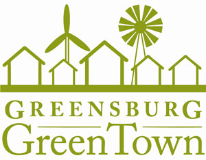 GREENSBURG GREENTOWN On May 4, 2007, an EF5 tornado leveled the town of Greensburg, Kan. Greensburg GreenTown is a grassroots, community-based organization that is helping to rebuild the town as a model green community. Find the organization online at www.greensburggreentown.org. |
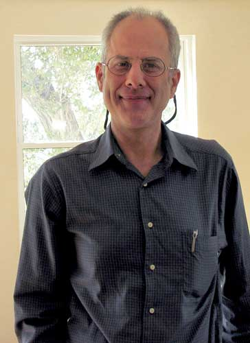 MEGAN PHELPS Daniel Wallach is the executive director and founder of Greensburg GreenTown. This photo was taken inside the nearly completed Silo Eco Home. |
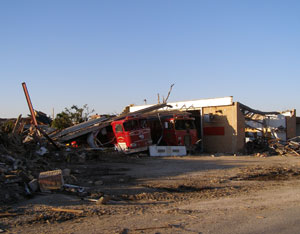 GREENSBURG GREENTOWN The Greensburg Tornado destroyed 95 percent of the town’s homes and buildings and took 11 lives. |
|
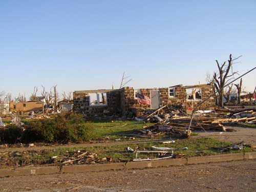 GREENSBURG GREENTOWN The tornado was 1.7 miles wide. Greensburg itself is only 1.5 square miles. |
 GREENSBURG GREENTOWN The Greensburg tornado was on the ground for 22 miles non-stop and 30 minutes. Maximum winds were estimated at 205 mph. |
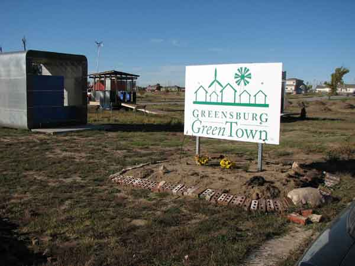 NATHAN POELL Outside, near the Greensburg GreenTown office. In the background are several “demonstration cubes” built to explain and showcase different green building technologies. The cubes were designed and constructed by Kansas State University students from the College of Architecture, Planning and Design. |
|
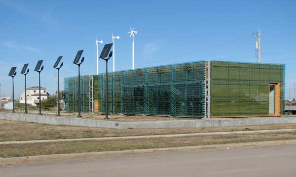 NATHAN POELL The outside of the Greensburg arts center, which is used for art exhibitions, classes and meeting space for community organizations. It’s the first building in Kansas to achieve a LEED Platinum rating. Among its many green features are rooftop solar panels, wind turbines and a geothermal heating and cooling system. |
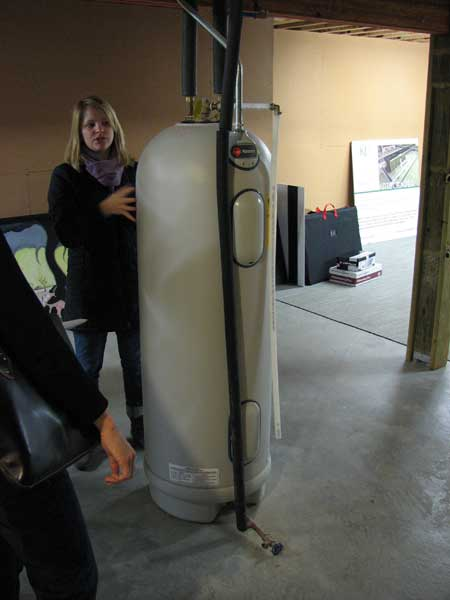 NATHAN POELL Part of the geothermal heating system in the basement of the arts center. |
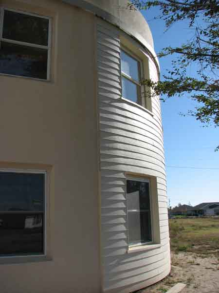 NATHAN POELL The Silo Eco-Home is one of the planned “Chain of Eco Homes” in Greensburg. When it has been completed, it will be available as an information center, and for rental as an eco-lodging. |
|
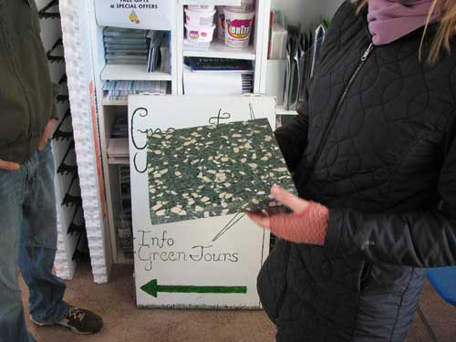 NATHAN POELL Greensburg GreenTown volunteers show examples of new green building products and technologies. This countertop material includes recycled materials. Other materials on display included samples of the materials for porous pavers, SIPs and insulated concrete forms. |
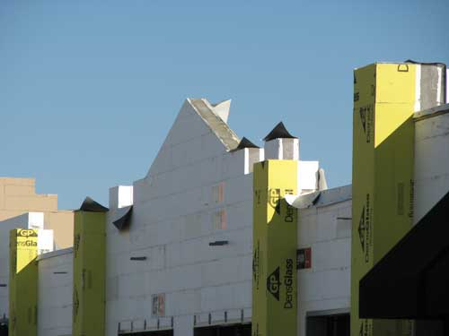 NATHAN POELL This commercial building in Greensburg is one of many new structures in town being constructed with insulated concrete forms (ICFs). ICF construction is extremely durable, making these buildings highly resistant to storms. It also produces well-insulated buildings, which will lead to reductions in heating and cooling costs. |
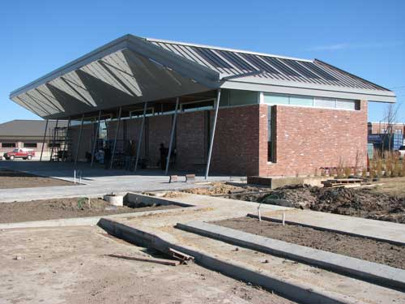 NATHAN POELL Building integrated PV panels are visible on the new Greensburg city hall. |